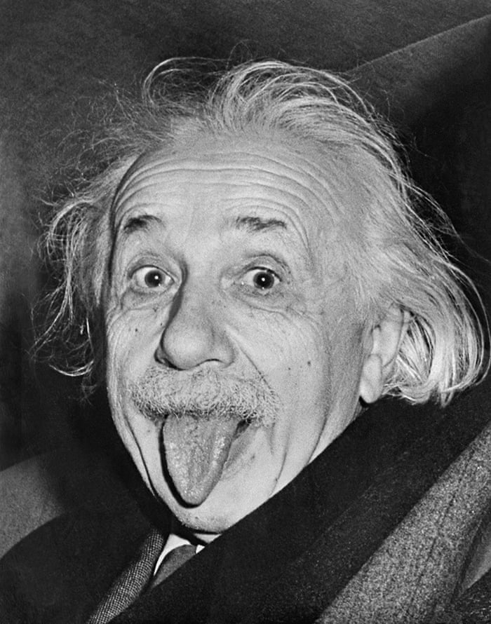
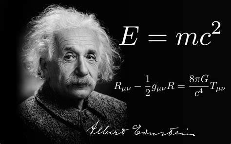
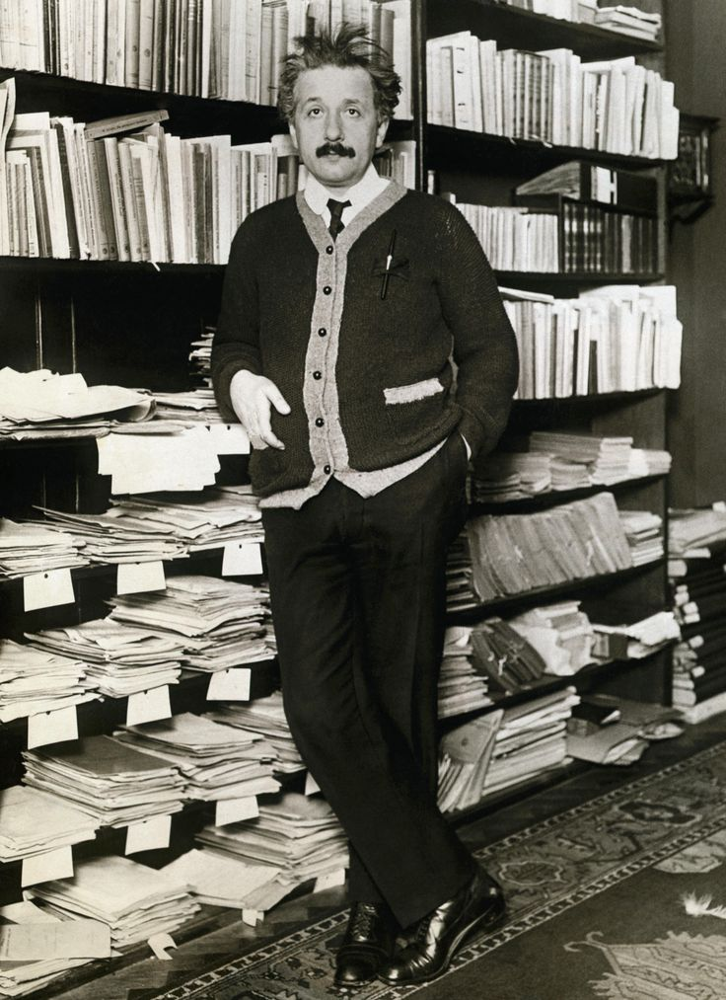
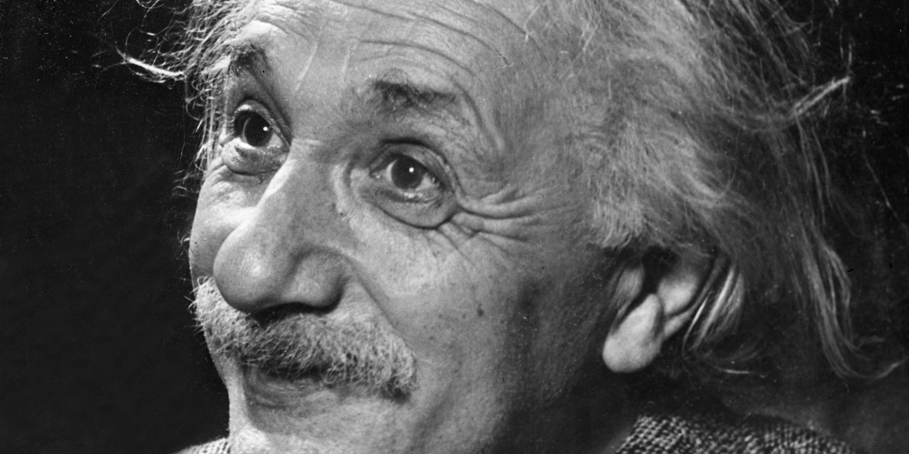
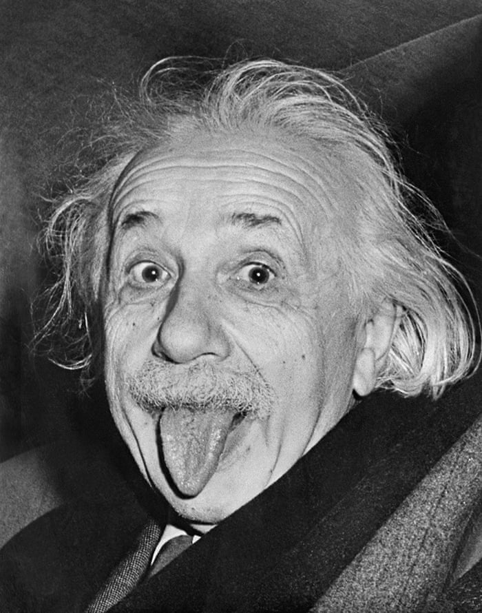
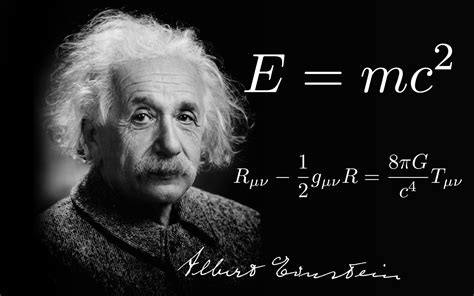
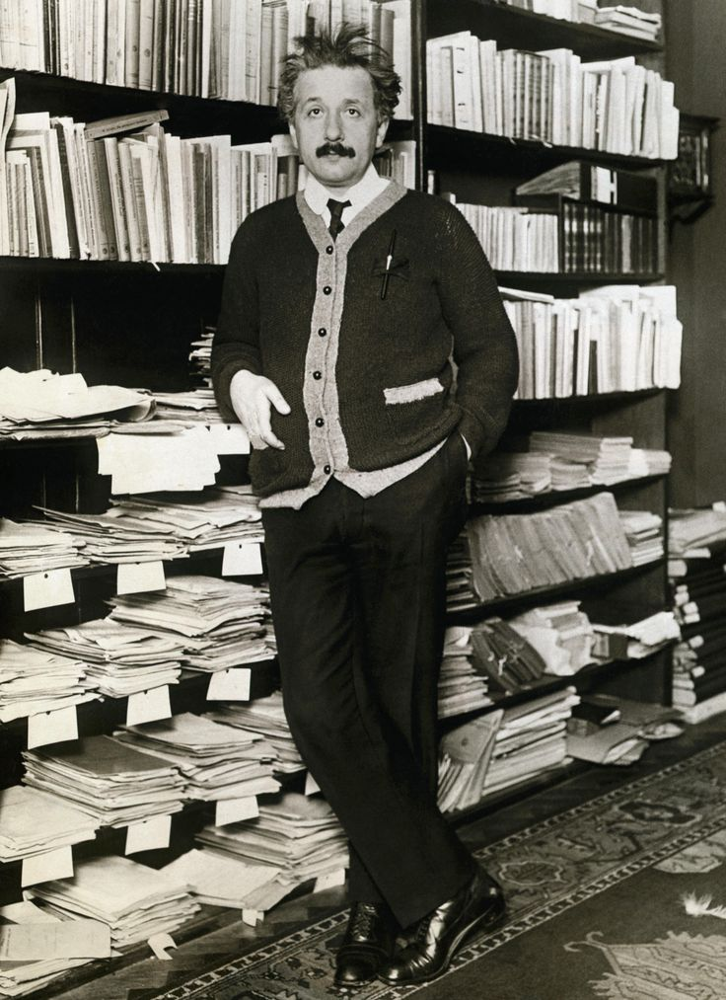
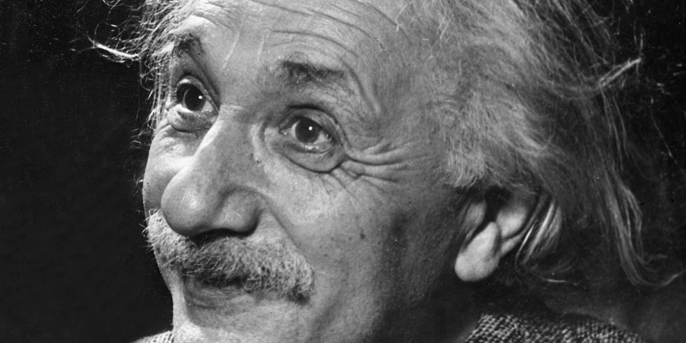

Tribute Page: Biography of Albert Einstein
Albert Einstein in 1905.
 







Albert Einstein
The Nobel Prize in Physics 1921
Born: 14 March 1879, Ulm, Germany
Died: 18 April 1955, Princeton, NJ, USA
Affiliation at the time of the award: Kaiser-Wilhelm-Institut (now Max-Planck-Institut) für Physik, Berlin, Germany
Prize motivation: "for his services to Theoretical Physics, and especially for his discovery of the law of the photoelectric effect."
Albert Einstein received his Nobel Prize one year later, in 1922.
Prize share: 1/1
Life
Albert Einstein grew up in Munich, where his father founded an electrical engineering company.
After studying at the ETH university in Zurich, Einstein worked at the patent office in Bern, during which time he produced several pioneering works in the field of physics. He was later employed at universities in Bern, Zurich, and Prague, and from 1914, in Berlin.
After the Nazis seized power in Germany, Einstein immigrated to the US, where he worked at the Institute for Advanced Study in Princeton, New Jersey. Albert Einstein married twice and had three children by his first marriage.
Work
If metal electrodes are exposed to light, electrical sparks between them occur more readily. For this "photoelectric effect" to occur, the light waves must be above a certain frequency, however. According to physics theory, the light's intensity should be critical.
In one of several epoch-making studies beginning in 1905, Albert Einstein explained that light consists of quanta - "packets" with fixed energies corresponding to certain frequencies. One such light quantum, a photon, must have a certain minimum frequency before it can liberate an electron.